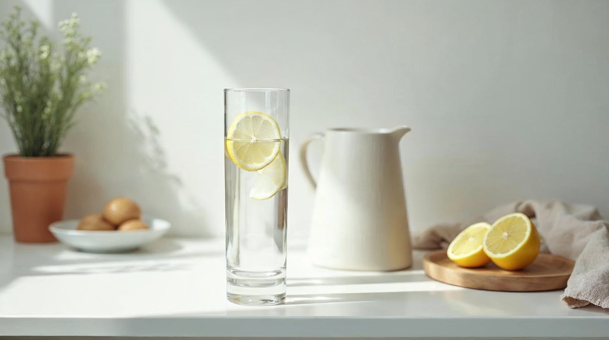
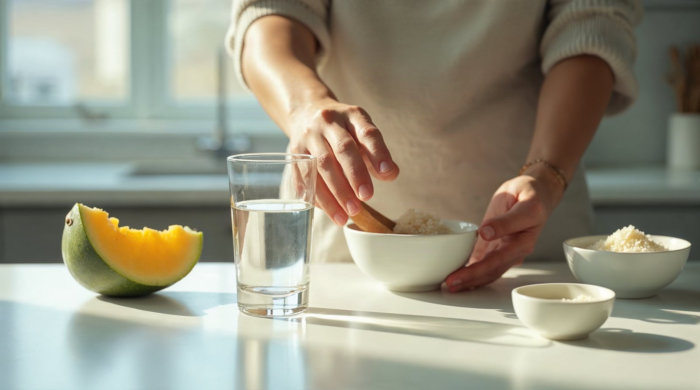
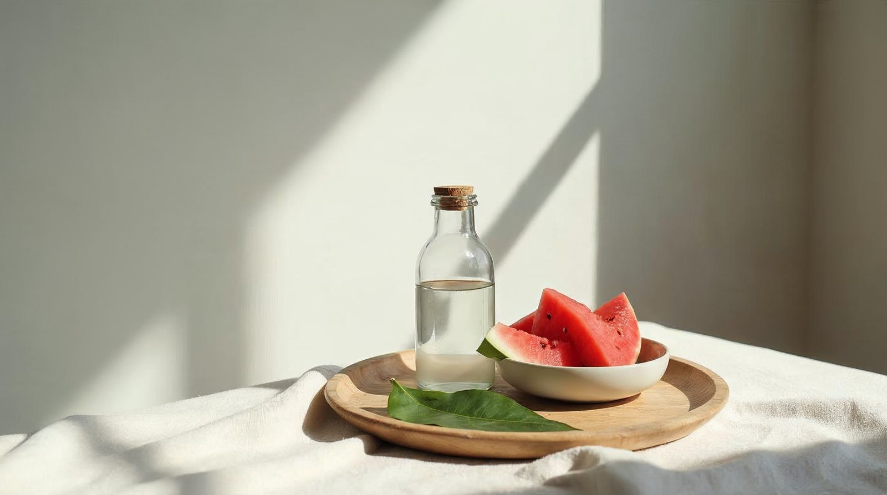
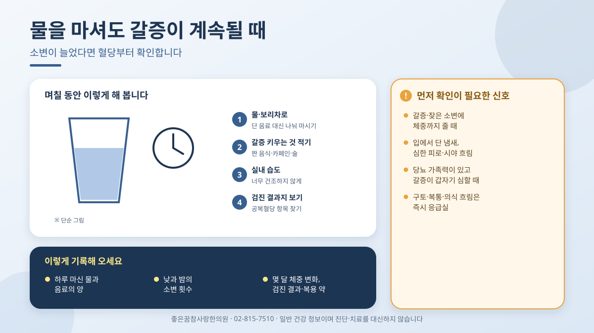

이종호 한의사 감수좋은꿈참사랑한의원 대표원장 (한의사 면허번호 19769)발행 2026-11-22 · 수정 2026-11-26
이 글의 차례
- 왜 이런 불편이 생길 수 있나요
- 갈증과 입 마름은 같은 것인가요?
- 생활 속에서는 이런 경우가 흔합니다
- 스스로 확인해 볼 목록
- 식사로 갈증을 덜어 보는 방법
- 운동할 때 물은 어떻게 마시나요?
- 밤에 목이 말라 깨는 경우
- 먼저 이렇게 여쭙니다
- 일상에서 먼저 해 볼 수 있는 것
- 집에서 해 볼 수 있는 물 마시기 요령
- 입 마름을 덜어 주는 작은 습관
- 왜 마셔도 금방 다시 목이 마를까요?
- 갈증에 대한 흔한 오해
- 한의원에서 함께 살필 수 있는 경우
- 처음 오시면 무엇을 확인하나요?
- 약 때문에 입이 마를 수도 있나요?
- 건강검진 결과지에서 무엇을 보면 될까요?
- 나이에 따라 달라지는 갈증
- 이렇게 기록해 오시면 상담이 쉬워집니다
- 기록은 이렇게 남겨 보세요
- 계절과 환경에 따라 달라지는 갈증
- 이런 증상은 먼저 확인이 필요합니다
물을 마셔도 갈증이 계속되고 소변까지 늘었다면 내과에서 혈액 검사로 혈당부터 확인해 보는 것이 좋습니다. 단순히 실내가 건조하거나 짠 음식을 먹어서일 수도 있지만, 몸의 상태를 점검하라는 신호일 수도 있습니다. 갈증과 함께 체중이 줄거나 심하게 피곤하다면 한의원보다 내과 검사가 먼저입니다.
갈증은 너무 흔한 느낌이라 대수롭지 않게 넘기기 쉽습니다. 저는 '물을 아무리 마셔도 입이 마르다'는 말씀을 들으면, 물을 더 마시라는 조언보다 왜 마르는지를 먼저 찾아보자고 말씀드립니다. 원인에 따라 해야 할 일이 꽤 다르기 때문입니다.
왜 이런 불편이 생길 수 있나요
- 혈당이 높으면 소변이 늘고 그만큼 갈증이 생길 수 있어 가장 먼저 확인할 부분입니다.
- 짠 음식, 카페인, 술은 갈증을 키우거나 몸의 수분을 빼앗을 수 있습니다.
- 난방으로 실내가 건조하거나 입으로 숨을 쉬면 입이 쉽게 마릅니다.
- 일부 약은 입 마름이나 갈증을 일으킬 수 있습니다.
갈증과 입 마름은 같은 것인가요?
비슷해 보여도 조금 다릅니다. 갈증은 몸 전체가 물을 원하는 느낌이라 마시고 나면 한동안 가라앉습니다. 반면 입 마름은 침이 적어 입안이 텁텁하고 끈적한 느낌이며, 물을 마셔도 금세 다시 마른다고 하시는 분이 많습니다.
입 마름이 주로 아침에 심하다면 자는 동안 입을 벌리고 숨 쉬는지, 코가 막혀 있는지부터 살펴볼 만합니다. 낮에도 계속 마르고 눈까지 건조하다면 드시는 약이나 다른 원인을 함께 확인해야 합니다.
갈증이 하루 종일 이어지고 소변 양까지 늘었다면 이야기가 달라집니다. 몸이 수분을 빠르게 내보내고 있다는 뜻일 수 있어서, 혈당처럼 혈액 검사로 볼 수 있는 부분을 먼저 확인하시길 권합니다.
생활 속에서는 이런 경우가 흔합니다
예를 들어 겨울에 난방을 세게 틀고 자는 경우, 아침마다 목이 칼칼하고 입이 마를 수 있습니다. 이때는 물을 많이 마시는 것보다 실내 습도를 맞추는 것이 먼저입니다.
예를 들어 커피를 하루 서너 잔 마시고 물은 거의 마시지 않는 경우, 오후가 되면 갈증과 나른함을 함께 느끼기도 합니다. 커피를 마신 만큼 물 한 잔을 곁들이는 것부터 해 보세요.
예를 들어 저녁에 찌개나 라면, 젓갈처럼 짠 음식을 먹은 날은 밤중에 깨서 물을 찾게 됩니다. 이런 갈증은 다음 날 식단을 싱겁게 하면 대개 줄어들어, 원인을 가늠하는 단서가 됩니다.
예를 들어 운동이나 사우나로 땀을 많이 흘린 날은 갈증이 당연히 늘어납니다. 이런 날은 땀을 흘린 만큼 물을 나눠 채워 주면 되고, 다음 날까지 이어지는지만 지켜보시면 됩니다.
스스로 확인해 볼 목록
- 하루에 마시는 물과 음료가 평소보다 눈에 띄게 늘었다
- 밤에 소변 때문에 깨는 횟수가 늘었다
- 단 음료를 마셔야 갈증이 풀리는 느낌이 든다
- 소변 색이 진하고 양이 적은 날이 많다
- 최근 몇 달 안에 새로 시작한 약이 있다
- 아침에 일어나면 입안이 특히 마르고 목이 아프다
앞의 세 가지 가운데 해당하는 것이 있다면 내과에서 혈당 검사를 먼저 받아 보세요. 나머지는 물 마시는 습관과 약 확인, 생활 환경 조정으로 살펴볼 수 있는 경우가 많습니다.
식사로 갈증을 덜어 보는 방법
갈증은 마시는 것만큼 먹는 것과도 관련이 있습니다. 국물과 젓갈, 장아찌, 라면처럼 짠 음식을 줄이면 물을 찾는 횟수도 함께 줄어드는 경우가 많습니다.
오이, 토마토, 수박, 배처럼 수분이 많은 채소와 과일을 곁들이는 것도 방법입니다. 다만 과일은 당이 있어 한 번에 많이 드시기보다 작은 그릇 하나 정도로 나눠 드시길 권합니다.
매운 음식도 입과 목을 마르게 할 수 있습니다. 매운 음식을 좋아하신다면 횟수를 조금 줄이거나, 먹을 때 물 대신 미지근한 보리차를 곁들여 보세요.
운동할 때 물은 어떻게 마시나요?
운동 전에 물 한두 모금, 운동 중에는 15~20분마다 조금씩, 운동 뒤에도 몇 번 나눠 마시는 방식이 흔히 안내됩니다. 한꺼번에 많이 마시면 속이 출렁거려 불편할 수 있습니다.
땀을 아주 많이 흘린 날이 아니라면 이온 음료보다 물로 충분한 경우가 많습니다. 운동 뒤 갈증이 다음 날까지 이어지는지 지켜보고, 이어진다면 진료 때 말씀해 주세요.
운동을 하지 않았는데도 운동한 날처럼 목이 마르다면, 그 차이를 기록해 두는 것이 원인을 찾는 데 도움이 됩니다.
밤에 목이 말라 깨는 경우
자다가 목이 말라 깨는 일이 잦다면 먼저 저녁 식사를 떠올려 보세요. 짜거나 매운 음식, 늦은 술자리가 있었던 날이라면 그 영향일 수 있습니다.
잠자리 주변이 건조한지도 확인해 보세요. 난방기 바람이 얼굴로 바로 오지 않게 하고, 머리맡에 미지근한 물을 조금 두면 깨더라도 다시 잠들기 쉽습니다.
자기 직전에 물을 많이 마시면 이번에는 소변 때문에 깨게 됩니다. 저녁 시간에 나눠 마시고, 잠들기 한 시간 전부터는 목을 축이는 정도로 줄여 보시길 권합니다.

먼저 이렇게 여쭙니다
- 갈증이 언제부터 늘었고, 하루 물 마시는 양은 어느 정도인가요?
- 소변 횟수나 양이 늘었나요? 밤에도 소변 때문에 깨나요?
- 단 음료나 카페인을 자주 마시나요?
- 체중이 이유 없이 줄거나 피곤함이 심해졌나요?
- 최근 새로 먹기 시작한 약이 있나요?

일상에서 먼저 해 볼 수 있는 것
- 단 음료 대신 물이나 보리차를 조금씩 나눠 마시기
- 짠 음식과 카페인, 술이 갈증을 키우는지 기록해 보기
- 실내가 너무 건조하지 않게 하기
- 마신 양과 소변 횟수를 며칠 메모하기
- 최근 건강검진 결과지에서 공복혈당 항목 찾아보기
집에서 해 볼 수 있는 물 마시기 요령
갈증이 날 때 한 번에 큰 컵으로 벌컥 마시면 금방 소변으로 나가고 다시 목이 마를 수 있습니다. 작은 컵으로 조금씩, 하루에 여러 번 나눠 마시면 몸에 부담이 적습니다.
단 음료와 이온 음료는 당이 들어 있어 갈증을 잠시 덮을 뿐 다시 마시고 싶어지게 할 수 있습니다. 물이 밍밍하게 느껴지면 보리차나 옥수수차처럼 카페인이 없는 차를 미지근하게 드셔 보세요.
입 마름이 심하다면 식사 때 천천히 꼭꼭 씹는 것도 도움이 됩니다. 씹는 동안 침이 나오기 때문입니다. 잘 때 입을 벌리는 습관이 있다면 코 막힘이 없는지 함께 살펴보세요.
마신 양을 재는 가장 쉬운 방법은 하루에 마실 물병을 아침에 채워 두는 것입니다. 저녁에 남은 양을 보면 실제로 얼마나 마셨는지 감이 옵니다.
입 마름을 덜어 주는 작은 습관
입이 자주 마르는 분은 하루에 몇 번 입을 헹궈 보세요. 미지근한 물로 가볍게 헹구기만 해도 텁텁함이 줄어든다는 분이 많습니다.
말을 많이 하는 일을 하신다면 중간중간 물을 한 모금씩 마시는 시간을 정해 두세요. 목소리를 오래 쓰면 입과 목이 쉽게 마릅니다.
담배는 입안을 마르게 하고 침이 나오는 것을 줄일 수 있습니다. 갈증과 입 마름이 함께 고민이라면 흡연 습관도 진료 때 함께 이야기해 주세요.
입술이 자주 트고 갈라진다면 입으로 숨 쉬는 습관이나 입술을 핥는 버릇이 함께 있는지도 살펴보세요. 입술이 마르는 것도 입 마름과 같은 흐름에서 생기는 경우가 많습니다.
왜 마셔도 금방 다시 목이 마를까요?
몸에 들어온 물은 필요한 만큼 쓰이고 나머지는 소변으로 나갑니다. 그런데 짠 음식을 자주 먹거나 단 음료로 수분을 채우면, 몸은 농도를 맞추려고 더 많은 물을 원하게 됩니다. 마셔도 갈증이 이어지는 흔한 까닭입니다.
카페인과 술은 소변을 늘려 마신 것보다 더 많은 수분을 내보내게 할 수 있습니다. 커피를 물 대신 마시는 습관이 있다면 하루 동안 실제로 몸에 남는 물은 생각보다 적을 수 있습니다.
한의학에서는 갈증을 몸의 열과 진액의 균형으로 살핍니다. 잠이 부족하고 긴장이 이어지면 몸에 열이 쌓여 입이 마르기 쉽고, 나이가 들거나 오래 지치면 진액이 줄어 마르는 쪽으로 기운다고 봅니다.
갈증에 대한 흔한 오해
'하루 2리터는 꼭 마셔야 한다'는 말을 그대로 따르시는 분이 많습니다. 필요한 물의 양은 체격과 활동량, 날씨, 먹는 음식에 따라 다릅니다. 숫자보다 소변 색과 몸의 느낌을 함께 보는 것이 현실적입니다.
'물을 많이 마실수록 몸에 좋다'는 생각도 조심스럽습니다. 짧은 시간에 너무 많이 마시면 속이 더부룩하고 밤에 소변으로 잠을 깨기도 합니다. 나눠서 적당히 마시는 쪽을 권합니다.
'갈증이 나면 이온 음료가 좋다'는 것도 상황에 따라 다릅니다. 땀을 아주 많이 흘린 날이 아니라면 평소에는 물이나 보리차로 충분한 경우가 많습니다.

한의원에서 함께 살필 수 있는 경우
- 혈당 검사에서 큰 이상은 없다고 들었지만 입이 자주 마르는 경우, 땀과 소변, 소화 상태를 함께 살핍니다.
- 갈증과 함께 몸이 덥고 잠이 얕은 경우, 몸의 열감과 잠의 모양을 함께 살핍니다.
- 식사가 불규칙하고 단 음료를 자주 찾는 경우, 식사 리듬과 생활 습관을 함께 살핍니다.
좋은꿈참사랑한의원에서는 갈증의 시간대와 소변, 체중 변화를 먼저 여쭙고, 필요하다고 판단될 때 당화혈색소 검사로 최근 혈당 흐름을 확인합니다. 진맥·설진으로 몸의 열감과 마름을 살핀 뒤 상태에 맞춰 침이나 한약 상담 등을 정하며, 당뇨가 의심되면 진단과 치료를 위해 내과 진료를 먼저 안내합니다.
처음 오시면 무엇을 확인하나요?
먼저 최근 건강검진이나 내과 검사 결과가 있는지 여쭙고, 혈당과 관련된 항목을 함께 봅니다. 검사를 받은 지 오래되었다면 이야기를 들은 뒤, 필요하다고 판단될 때 당화혈색소로 최근 혈당 흐름을 확인합니다.
진맥은 모든 분께 기본으로 하고, 혀가 마르거나 붉은지 설진으로 살핍니다. 한의학에서는 같은 갈증이라도 몸에 열이 많은 쪽인지, 진액이 부족해 마르는 쪽인지를 나누어 보는데, 땀이 나는 모양과 잠, 대변 상태가 이를 가늠하는 단서가 됩니다.
드시는 약이 있다면 이름을 꼭 알려 주세요. 한약 상담은 지금 드시는 약을 확인한 뒤에 진행하고, 처방받은 약은 임의로 끊지 않도록 말씀드립니다.
약 때문에 입이 마를 수도 있나요?
그럴 수 있습니다. 알레르기 약, 일부 혈압약과 이뇨제, 우울이나 불안에 쓰는 약, 방광 약 가운데에는 입 마름을 함께 느끼게 하는 것이 있다고 알려져 있습니다.
새 약을 시작한 뒤 입이 마르기 시작했다면 처방한 의사나 약사에게 그 사실을 알려 주세요. 다만 입이 마르다고 스스로 약을 끊거나 줄이지는 마세요. 조절은 처방한 의사와 상의해서 정합니다.
진료 때도 드시는 약의 이름을 알려 주시면, 갈증과 입 마름을 살필 때 함께 고려합니다. 약 봉투나 처방전을 사진으로 찍어 오시면 편합니다.
건강검진 결과지에서 무엇을 보면 될까요?
결과지에서 '공복혈당' 항목을 먼저 찾아보세요. 정상 범위를 벗어났다는 표시가 있거나 예전보다 숫자가 꾸준히 오르고 있다면 내과 상담을 권합니다.
검사 항목에 '당화혈색소'가 있다면 지난 두세 달 동안의 혈당 흐름을 보여 주는 숫자입니다. 하루 이틀의 식사보다 긴 흐름을 볼 수 있어 갈증의 원인을 가늠하는 데 참고가 됩니다.
소변 검사에서 '요당' 항목이 양성으로 나왔는지도 확인해 보세요. 어떤 항목이든 해석이 어렵다면 결과지를 그대로 가져와 주시면 함께 보고, 필요하면 내과 진료를 안내합니다.
나이에 따라 달라지는 갈증
나이가 들면 목마름을 느끼는 감각이 무뎌져 몸에 물이 모자라도 갈증을 덜 느끼는 경우가 있다고 알려져 있습니다. 그래서 어르신은 갈증이 없어도 정해진 시간에 조금씩 드시는 습관이 도움이 됩니다.
반대로 아이와 청소년은 뛰어놀거나 운동한 뒤 갈증을 크게 느끼는데, 이때 단 음료로 채우는 습관이 생기기 쉽습니다. 집에 물병을 눈에 띄는 곳에 두면 손이 먼저 물로 갑니다.
부모님이 밤에 화장실 가는 횟수가 늘었다거나 물을 유독 자주 찾으신다면, 가족이 먼저 알아차리는 경우가 많습니다. 그럴 때는 최근 검사 결과를 함께 확인해 보세요.

이렇게 기록해 오시면 상담이 쉬워집니다
- 하루 동안 마신 물과 음료의 양
- 낮과 밤의 소변 횟수
- 최근 몇 달 사이 체중 변화
- 건강검진 결과지와 복용 중인 약
기록은 이렇게 남겨 보세요
물병이나 컵 크기를 하나로 정해 두고, 마실 때마다 휴대전화 메모에 바를 정(正) 자로 표시해 보세요. 하루가 끝나면 몇 컵인지 바로 셀 수 있습니다.
소변은 낮과 밤을 나눠 횟수만 적어도 됩니다. 밤에 깨서 화장실에 간 횟수는 따로 표시해 두면 진료 때 이야기가 훨씬 구체적이 됩니다.
갈증이 유독 심했던 날은 그날 먹은 음식과 날씨, 운동 여부를 한 줄 덧붙여 주세요. 사흘에서 일주일만 모아도 갈증이 어떤 날 커지는지 흐름이 보입니다.
계절과 환경에 따라 달라지는 갈증
여름에는 땀으로 나가는 물이 많아 갈증이 느는 것이 자연스럽습니다. 이때는 목이 마르기 전에 조금씩 마시는 습관이 도움이 됩니다. 땀을 많이 흘리는 일을 하신다면 일하는 중간중간 마실 시간을 정해 두세요.
겨울에는 땀은 적지만 난방으로 공기가 건조해 입과 목이 마르기 쉽습니다. 실내에 젖은 수건을 걸어 두거나 가습기를 쓰는 것, 자기 전 미지근한 물 한 모금이 도움이 되기도 합니다.
사무실처럼 냉난방이 계속 돌아가는 곳에서 오래 지내는 분은 계절과 상관없이 입이 마를 수 있습니다. 자리에서 손이 닿는 곳에 물을 두는 것만으로도 마시는 횟수가 달라집니다.
이런 증상은 먼저 확인이 필요합니다
- 갈증과 잦은 소변, 이유 없는 체중 감소가 함께 있는 경우
- 심한 피로나 시야 흐림이 갈증과 함께 있는 경우
이런 신호가 있으면 한의원보다 가까운 병원이나 응급실을 먼저 찾으세요.

여쭙는 것
- 갈증이 언제부터 늘었고, 하루 물 마시는 양은 어느 정도인가요?
- 소변 횟수나 양이 늘었나요? 밤에도 소변 때문에 깨나요?
- 단 음료나 카페인을 자주 마시나요?
생활에서 해 볼 것
- 단 음료 대신 물이나 보리차를 조금씩 나눠 마시기
- 짠 음식과 카페인, 술이 갈증을 키우는지 기록해 보기
- 실내가 너무 건조하지 않게 하기
한의원에서 함께 살필 것
- 혈당 검사에서 큰 이상은 없다고 들었지만 입이 자주 마르는 경우, 땀과 소변, 소화…
- 갈증과 함께 몸이 덥고 잠이 얕은 경우, 몸의 열감과 잠의 모양을 함께 살핍니다.
- 식사가 불규칙하고 단 음료를 자주 찾는 경우, 식사 리듬과 생활 습관을 함께 살핍니다.
먼저 확인이 필요한 신호
- 갈증과 잦은 소변, 이유 없는 체중 감소가 함께 있는 경우
- 심한 피로나 시야 흐림이 갈증과 함께 있는 경우
한눈에 보는 표
| 구분 | 핵심 |
|---|---|
| 여쭙는 것 | 갈증이 언제부터 늘었고, 하루 물 마시는 양은 어느 정도인가요? 소변 횟수나 양이 늘었나요? 밤에도 소변 때문에 깨나요? |
| 생활에서 해 볼 것 | 단 음료 대신 물이나 보리차를 조금씩 나눠 마시기 짠 음식과 카페인, 술이 갈증을 키우는지 기록해 보기 |
| 한의원에서 함께 살필 것 | 혈당 검사에서 큰 이상은 없다고 들었지만 입이 자주 마르는 경우, 땀과 소변, 소화 상태를 함께 살핍니다. 갈증과 함께 몸이 덥고 잠이 얕은 경우, 몸의 열감과 잠의 모양을 함께 살핍니다. |
| 먼저 확인이 필요한 신호 | 갈증과 잦은 소변, 이유 없는 체중 감소가 함께 있는 경우 심한 피로나 시야 흐림이 갈증과 함께 있는 경우 |
자주 묻는 질문
갈증이 있으면 바로 당뇨인가요?
그렇게 단정할 수는 없지만 혈당 확인이 필요한 경우가 있어 검사를 권합니다.
한의원에서도 혈당을 확인하나요?
필요하다고 판단될 때 당화혈색소를 확인할 수 있습니다. 진단과 약 조절은 내과에서 하도록 안내합니다.
물을 많이 마시면 해결되나요?
원인에 따라 달라서 양을 늘리기 전에 원인을 먼저 확인하는 것이 좋습니다.
한의원에서는 무엇을 살피나요?
갈증의 시간대, 식사와 잠, 땀과 소변, 소화 상태를 함께 여쭙고 생활 전체를 살핍니다.
아침에만 입이 마른데 괜찮을까요?
자는 동안 입으로 숨을 쉬거나 실내가 건조한 경우가 많아 습도와 코 막힘을 먼저 살펴보세요. 낮까지 이어지면 진료 때 말씀해 주세요.
커피도 마신 물로 쳐도 되나요?
커피는 소변을 늘릴 수 있어 물과 따로 세어 기록하시길 권합니다.
좋은꿈참사랑한의원은 재진 때 지난번 이야기부터 이어서 여쭙니다. 진료시간과 예약은 오시는 길에서 확인하세요.
어디서 상담받을 수 있나요?
좋은꿈참사랑한의원은 서울 동작구 만양로2길 2 신성빌딩 3층·5층(서울 동작구 상도동, 7호선 상도역 3번 출구 근처)에 있습니다. 한의사 3명(이종호 대표원장, 조영기 수석진료원장, 정원영 진료원장)이 진료합니다. 진료시간은 평일 09:30~20:00(점심 13:00~14:00), 토·일·공휴일 09:30~15:00이며, 방문 전 전화로 확인을 권합니다. 예약은 네이버 예약, 카카오톡 상담, 전화 02-815-7510로 받습니다.
이 글은 일반적인 건강 정보이며 개인의 진단이나 치료를 대신하지 않습니다. 증상이 있거나 복용 중인 약이 있다면 진료를 통해 확인하세요. 치료 효과는 개인마다 다를 수 있습니다.
작성 기준: 일반적으로 알려져 있는 건강 정보를 참고해 정리했습니다(대표원장 감수). 증상 기록은 1~2주 동안 하루 1회, 비슷한 시간에 적어 오시면 지난 상태와 비교하기 쉽습니다.